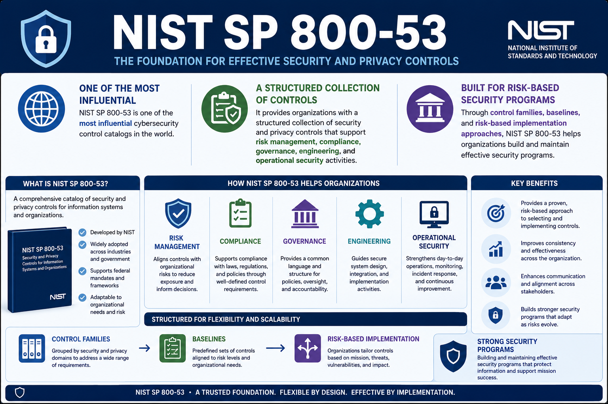

What Is NIST SP 800-53?
Course Summary
Connecting to LMS... Progress: in progress
Version 1.0 | Date: 2026-06-16 | Introductory overview of NIST SP 800-53 security and privacy controls.

Narration
NIST SP 800-53 is one of the most influential cybersecurity control catalogs in the world.
It provides organizations with a structured collection of security and privacy controls that support risk management, compliance, governance, engineering, and operational security activities.
Through control families, baselines, and risk-based implementation approaches, NIST SP 800-53 helps organizations build and maintain effective security programs.